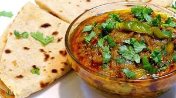

Begun Vorta

Home
Description
Begun Bharta is a beloved Bangladeshi dish made by roasting eggplant (begun) until it becomes soft and
smoky, then mashing it with mustard oil, onions, green chilies, and garlic. This simple yet flavorful dish
is a staple in Bengali households and is often enjoyed with plain rice and lentils (dal).
Ingredients
- 1 large eggplant
- 1 tbsp mustard oil
- 1 small onion (finely chopped)
- 2 green chilies (chopped)
- 1/2 tsp salt (or to taste)
- 1 clove garlic (minced)
Steps
- Roast the eggplant over an open flame or in the oven until the skin is charred.
- Let it cool, then peel off the skin and mash the flesh.
- Mix with mustard oil, chopped onions, green chilies, garlic, and salt.
- Serve with plain rice and lentils for a traditional Bengali meal.